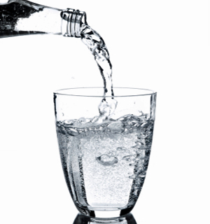
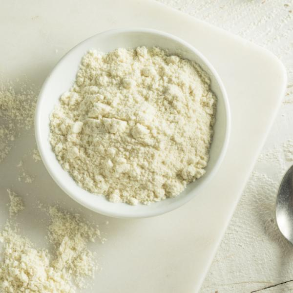
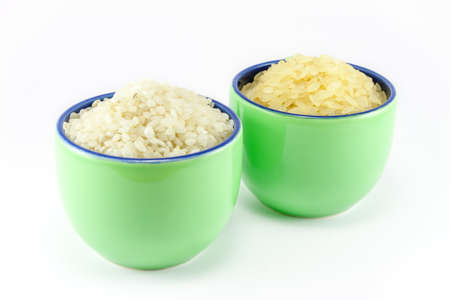
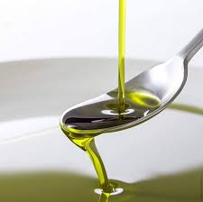

En cuanto a las equivalencias, depende de la densidad del ingrediente que vayas a utilizar porque aunque el peso sea lo mismo, varía el volumen. Te puedes guiar de la siguiente forma:
- 1 libra equivale a 454 gramos
- 1 onza equivale a 28 gramos
- 1 cucharada sopera equivale a 12-15 gramos (también puedes encontrar c.s. ó c.s. como cantidad suficiente de algún ingrediente)
- 1 cucharadita de postre equivale a 5 gramos y a 5 mililitros

EQUIVALENCIAS DE VOLUMEN
- 1 cucharadita de agua equivale a 5 mililitros
- 1 cucharada de agua equivale a 15 mililitros
- 1 vaso de agua equivale a 200 centímetros cúbicos
- 1 vaso de vino equivale a 100 centímetros cúbicos
- 1 taza de café equivale a 250 centímetros cúbicos
- 1 tazón o taza de desayuno equivale a 250 mililitros y, por tanto, a 1/4 litro
- 1 taza de café equivale a 100 mililitros y, por tanto, a 1 decilitro

UNA TAZA DE LAS DE CAFÉ EN GRAMOS
- Arroz y azúcar equivale a 75 gramos
- Harina equivale a 60 gramos
- Pan rallado y queso rallado equivale a 50 gramos

UNA TAZA DE DESAYUNO EN GRAMOS
- Arroz y azúcar equivale a 240 gramos
- Harina equivale a 180 gramos
- Pan rallado y queso rallado equivale a 150 gramos

ACEITE
- 1 cucharada de aceite equivale a 14-16 centímetros cúbicos
- 1 cucharadita de aceite equivale a 4-5 centímetros cúbicos
HARINA
- 1 cucharada rasa harina equivale a 10 gramos
- 1 cucharada colmada de harina equivale a 20 gramos
- 1 cucharadita rasa de harina equivale a 3 gramos
AZUCAR
- 1 cucharada rasa azúcar equivale a 11-13 gramos
- 1 cucharada colmada azúcar equivale a 25 gramos
- 1 cucharadita rasa azúcar equivale a 3-4 gramos
MANTEQUILLA
- 1 cucharada rasa mantequilla equivale a 10-15 gramos
- 1 cucharadita rasa mantequilla equivale a 6-8 gramos
- 1 cucharada colmada mantequilla equivale a 40-45 gramos
- Una nuez mantequilla equivale a 30 gramos
LEVADURA
- 1 sobre de levadura liofilizada (sobrecito en polvo) de 5,5 gramos equivale a 14 gramos de levadura fresca (la del cubito)